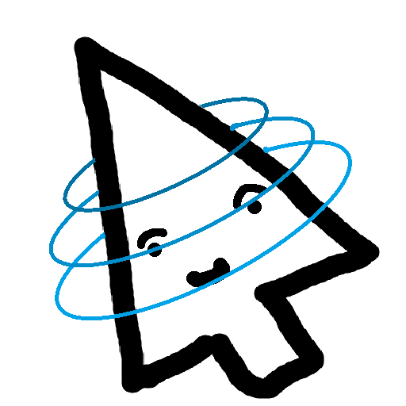
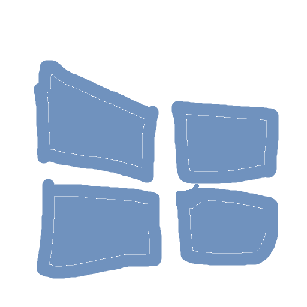
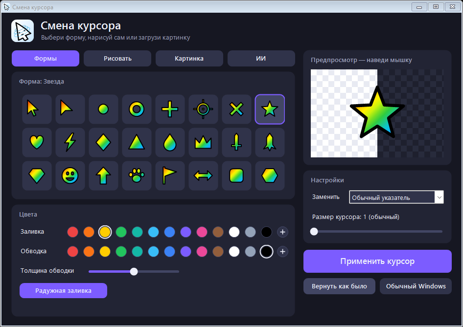

Смена курсораВыбери готовую форму, нарисуй сам, загрузи картинку или просто опиши словами — нарисует ИИ. Один клик, и курсор в Windows уже другой.

Скачать для WindowsБесплатно · один файлWindows 10 и 11. Ничего устанавливать не нужно — скачал и запустил.
Шесть способов получить курсор, которого нет ни у кого.
Стрелки, звезда, сердце, молния, корона, меч, лапка и другие. Любой цвет, обводка и радужная заливка.
Пиксельный редактор: карандаш, ластик, заливка, пипетка, линия и отмена. Нарисуй курсор по точкам.
Загрузи любую картинку или перетащи её в окно. Программа сама уберёт фон и даст выбрать остриё.
Напиши «кот в очках» или «злая картошка» — ИИ нарисует мемный курсор. Есть четыре стиля.
Свои стрелки для растягивания окон. Нарисуй одну — программа сама повернёт её в четыре стороны.
Кнопка «Вернуть как было» ставит прежние курсоры и размер. Есть и кнопка обычных курсоров Windows.
Тёмное окно, предпросмотр справа — наведи мышку и сразу попробуй курсор.

Программа — это один файл. Никаких установщиков и лишних галочек.
Нажми «Скачать для Windows». Файл CursorChanger.exe появится в папке «Загрузки».
Открой файл двойным щелчком. Если Windows покажет синее окно защиты, нажми «Подробнее», потом «Выполнить в любом случае».
Выбери или нарисуй курсор, посмотри его в предпросмотре и нажми «Применить курсор».
Коротко о главном.
У программы нет платной цифровой подписи, поэтому Windows не знает её автора и на всякий случай спрашивает. Это обычное дело для маленьких бесплатных программ.
Нажми «Вернуть как было» — программа при первом запуске запоминает твои курсоры. Кнопка «Обычный Windows» ставит стандартные.
Только для вкладки «ИИ»: описание отправляется в бесплатный сервис pollinations.ai, который рисует картинку. Он делает одну картинку примерно раз в 45 секунд. Всё остальное работает без интернета.
Нет. Курсоры меняются только для твоей учётной записи.
Сначала верни курсоры кнопкой «Вернуть как было», потом просто удали файл CursorChanger.exe.
Кстати, на этом сайте курсор уже необычный — пошевели мышкой.
Скачать для WindowsБесплатно · один файл